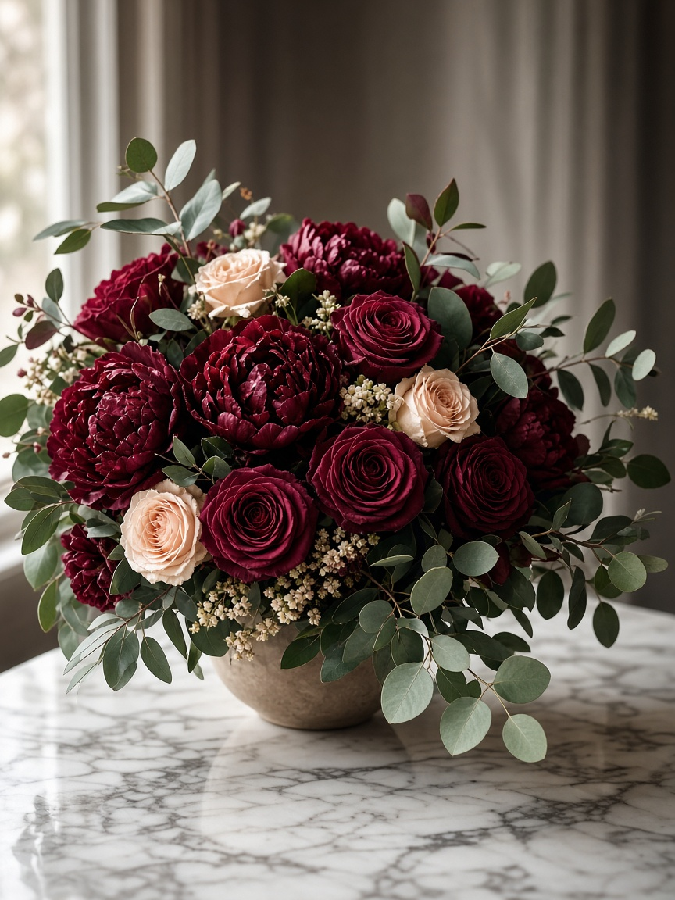

Kamilly, amar você não é um recado, é uma decisão que se repete. É olhar para a mãe do Matteo e sentir o mundo inteiro organizar de novo.
Eu te amo nos seus cachos, nesse cabelo que parece ter sido feito para o vento e para a minha mão. Eu te amo na sua voz, na sua teimosia bonita, na sua forma de cuidar mesmo cansada. Eu te amo quando você ri e o dia muda de cor.
Eu te amo no ordinário: no cansaço, na louça, na madrugada, no olhar de quem já viu o pior e ainda assim escolhe ficar humano. Eu te amo no extraordinário: quando você se veste de coragem e segue, mesmo quando eu falhei em ser porto.
Eu te amo como se ama uma casa. Não a casa perfeita das fotos. A casa verdadeira, com história, com marcas na parede, com um filho crescendo no meio, com a gente aprendendo a ser família.
Amo o seu jeito
A forma como você ocupa o espaço. A delicadeza que não é fragilidade. A força que não precisa gritar para existir.

Amo a sua história
Tudo o que você atravessou até aqui. Cada versão sua me ensina. Eu quero as próximas versões ao seu lado, não como plateia.

Amo o nosso laço
Não é só romance. É sangue, é filho, é destino entrelaçado. É uma família que eu quero honrar todos os dias.
Parece silêncio bom, daquele que não precisa ser preenchido.
Parece vontade de acertar mesmo depois de errar feio.
Parece orgulho quando você entra num cômodo.
Parece medo de te perder, e coragem de merecer ficar.
Parece o nome do nosso filho dito com o seu nome no mesmo fôlego.
Parece futuro. Casa. Café. Mão dada. Desculpa dita cedo. Beijo dito sempre.